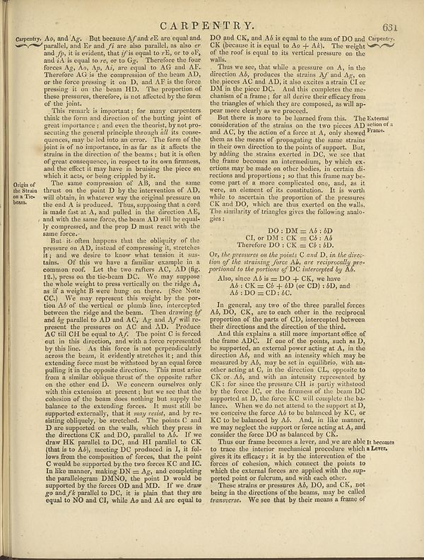

Scan ID britannica:309f765b1ecc83e0a7f7762e44b4a927a7555443:train:1680
Image SHA-256 fbb4a5fde0c2b233b6df827e5998ef2fc15cd2bc73b4eb99b93d91db83199d1b
Status: ok. Running header: C ARPENTRY. 631 (article_title). Removed page furniture: Page-header: C ARPENTRY. 631.
PDF · raw Parse reply · LaTeX
Entries: CARPENTRY

| # | Class | Box | Parse 3.5 | Used text | Source |
|---|---|---|---|---|---|
| 1 | Text | [0.0332, 0.0625, 0.0908, 0.0875] | **Currently,** | Carpentry. | super_vl |
| 2 | Text | [0.0898, 0.057, 0.4775, 0.1906] | As, and Ag. But because A/and-2B are equal and parallel, and Ex and f/ are also parallel; as also or and jp, it is evident, that if/s equal to eR, or to F, and sA is used to rG, or to Gg?. Therefore the forefore Ags Aso, Ap, Av, are equal to AC and AC. Therefore Ac is the compression of the beam AD, or the force pressing it on the beam HD. The proportion of these pressures, therefore, is not affected by the form of the point. | try. Aσ, and 'Ag. But because As and cE are equal and parallel, and Er and fi are also parallel, as also er and fp, it is evident, that if is equal to rE, or to oF, and iA is equal to re, or to Gg. Therefore the four forces Ag, Aσ, Ap, Ai, are equal to AG and AS. Therefore AG is the compression of the beam AD, or the force pressing it on D, and AS is the force pressing it on the beam HD. The proportion of these pressures, therefore, is not affected by the form of the joint. | super_vl |
| 3 | Text | [0.0918, 0.1914, 0.4785, 0.3227] | This remark is important: for many carpenters think the form and direction of the hitting joint of greater importance; and even the checks by not prosecuting the general principle through all its consequences, may be led into an order. The form of the joint is of no importance, in as far as it affects the strains in the direction of the beams, but it is often of pure consequence, in respect to its own firmness, and the effect it may have to brushing the piece on which it acts, or being crippled by it. | This remark is important; for many carpenters think the form and direction of the butting joint of great importance; and even the theorist, by not prosecuting the general principle through all its consequences, may be led into an error. The form of the joint is of no importance, in as far as it affects the strains in the direction of the beams; but it is often of great consequence, in respect to its own firmness, and the effect it may have in bruising the piece on which it acts, or being crippled by it. | super_vl |
| 4 | Caption | [0.0273, 0.3219, 0.0645, 0.3672] | Origin of the Strain on a Tbe beam. | Origin of the Strain on a Tbe beam. | parse_fallback · box_too_small |
| 5 | Text | [0.0889, 0.3234, 0.4766, 0.4281] | The same component of AB, and the same thrust on the point D by the intersection of AD, will obtain, in whatever way the original pressure on the end A is produced. Thus, supporting that a cord is made fast at all, and parallel in the direction AE, and with the same force, the beam AD will be equally compressed, and the prop D must react with the same forces. | The same compression of AB, and the same thrust on the point D by the intervention of AD, will obtain, in whatever way the original pressure on the end A is produced. Thus, supposing that a cord is made fast at A, and pulled in the direction AE, and with the same force, the beam AD will be equally compressed, and the prop D must react with the same force. | super_vl |
| 6 | Text | [0.0879, 0.4289, 0.4795, 0.9016] | But, it often happens to the obliquity of the pressure on AD, instead of expressing it, stretches it; and we desire to know what tension it sustains. Or they we have a familiar example in a common roof. Let the two others AC, (D) (the 18), press on the tie-beam DC. We may suppose this whole weight to B was very length between the ridge A, as if it would B were hump on there. (See Note CC). We may represent this weight by the position A of the vertical or plane lines, intersect between the ridge and the beam. Then drawing bf and agr parallel to AD and AC, Ag and Auf will represented the pressur | But it often happens that the obliquity of the pressure on AD, instead of compressing it, stretches it; and we desire to know what tension it sustains. Of this we have a familiar example in a common roof. Let the two rafters AC, AD (fig. 12.), press on the tie-beam DC. We may suppose the whole weight to press vertically on the ridge A, as if a weight B were hung on there. (See Note CC.) We may represent this weight by the portion Ab of the vertical or plumb line, intercepted between the ridge and the beam. Then drawing bf and bg parallel to AD and AC, Ag and As will represent the pressures on | super_vl |
| 7 | Text | [0.4932, 0.0633, 0.9287, 0.1117] | DO and CK, and Ak is equal to the sum of DO and Carpentry. CK because it is equal to Ao + A4). The weights of the roof is equal to its vertical pressure on the wall. | DO and CK, and Ab is equal to the sum of DO and Carpentry. CK (because it is equal to Ao + Ak). The weight of the roof is equal to its vertical pressure on the walls. | super_vl |
| 8 | Text | [0.4941, 0.1125, 0.8701, 0.3914] | Thus we see, that while a pressure on A, in the direction AB, produces the strains AF and AG, on the pieces AC and AD, it has excited a strain Cl or DM in the place DC. And this completes the mechanism of a frame; for all derive their efficacy from the triangles of which they are composed, as will ape your more clearly as we proceed. | Thus we see, that while a pressure on A, in the direction AB, produces the strains AS and AG, on the pieces AC and AD, it also excites a strain CI or DM in the piece DC. And this completes the mechanism of a frame; for all derive their efficacy from the triangles of which they are composed, as will appear more clearly as we proceed. But there is more to be learned from this. The consideration of the strains on the two pieces AD and AC, by the action of a force at A, only showed them as the means of propagating the same strains in their own direction to the points of support. But, by adding th | super_vl · expanded_beyond_parse |
| 9 | Formula | [0.5547, 0.4039, 0.7998, 0.4445] | DO : DM : OK : DI : CM : = OO A Where Do : CK - CE: All | DO : DM : OK : DI : CM : = OO A Where Do : CK - CE: All | parse |
| 10 | Text | [0.4912, 0.4469, 0.8623, 0.4883] | _Or, the pressures on the points_ C _and D, in the direc tion of the training force A, or the increally proportioned to the portions of DE Intercepted By Al._ | Or, the pressures on the points C and D, in the direction of the straining force Ab, are reciprocally proportional to the portions of DC intercepted by Ab. | super_vl |
| 11 | Text | [0.4893, 0.4891, 0.832, 0.5336] | Also, since A is = DO + CK, we have A\; cK - CE « + d (or CD) : 50, and A\; DO = DO - dz. | Also, since Ab is = DO + CK, we have Ab : CK = Cb + bD (or CD) : bD, and Ab : DO = CD : bC. | super_vl |
| 12 | Text | [0.4902, 0.5367, 0.8584, 0.5906] | In general, any two of the three parallel forces AB, DO, CK, are to each other in the reciprocal proportion of the parts of OD, interconnect and their direction and the direction of the third. | In general, any two of the three parallel forces AB, DO, CK, are to each other in the reciprocal proportion of the parts of CD, intercepted between their directions and the direction of the third. | super_vl |
| 13 | Text | [0.4883, 0.5898, 0.8672, 0.782] | And this explains a still more important office of the frame aDC. I can of the grains, such as D, be supported, an external power acting at A, in the direction AB, and with an intensity which may be measured by AB, may be set in equilibrium, with another acting at C, in the direction CLs, opposite to CK or A, and with an intensity represented by CK, for since the pressure CH is partly attributed by the force IC, or the firmness of the beam DC support as D, the force K, will complete the balance. When you are not attend to the support at D, we conceive the force AB to be balanced by KC, or KC t | And this explains a still more important office of the frame A D C. If one of the points, such as D, be supported, an external power acting at A, in the direction A b, and with an intensity which may be measured by A b, may be set in equilibrio, with another acting at C, in the direction C L, opposite to C K or A b, and with an intensity represented by C K: for since the pressure C H is partly withstood by the force I C, or the firmness of the beam D C supported at D, the force K C will complete the balance. When we do not attend to the support at D, we conceive the force A b to be balanced by | super_vl |
| 14 | Text | [0.4873, 0.7828, 0.9297, 0.8594] | Thus our frame becomes a lever, and we are able it becomes to trace the interior mechanical procedure which a Leres, given it is efficacy in a by the interaction of the forces of cohesion, which cannot the points to which the external forces are applied with the supported point or flucture, and with each other. | Thus our frame becomes a lever, and we are able to trace the interior mechanical procedure which a Lever gives it its efficacy: it is by the intervention of the forces of cohesion, which connect the points to which the external forces are applied with the supported point or fulcrum, and with each other. | super_vl |
| 15 | Text | [0.4863, 0.8602, 0.8682, 0.8992] | These strains or pressure AB, DO, and CK, not being in the directions of the beams, may be called _transverse_. We see that by their means a frame of | ported point of fulcrum, and with each other. These strains or pressures Ab, DO, and CK, not being in the directions of the beams, may be called transverse. We see that by their means a frame of | super_vl |
Britannica scans: National Library of Scotland, CC0 1.0. Wikipedia text: Wikipedia contributors, CC BY-SA 4.0, revision links on each page. Generated 2026-10-18T13:26:14+00:00.